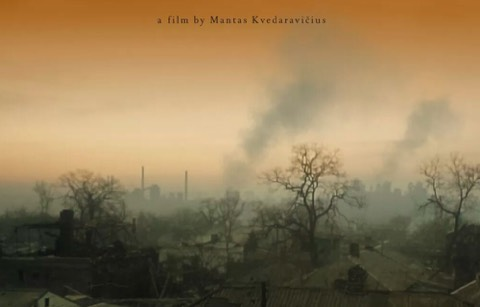

Double Exposure 2022
The eighth edition: October 13-16, 2022 · In person.
Venues: Naval Heritage Center, National Geographic Grosvenor Auditorium, District Architecture Center, Dirty Habit
Programme source: the 2022 festival catalogue (PDF, in the Wayback Machine) and the festival website.
War, conflict & the militaryFunding & distributionHealth & medicineDocumentary craftLegal & safety for reportersRussia & Eastern EuropeDemocracy & electionsChina & East Asia
Films
 The GrabGabriela CowperthwaiteOpening Night
The GrabGabriela CowperthwaiteOpening Night American PainDarren FosterCenterpiece
American PainDarren FosterCenterpiece RetrogradeMatthew HeinemanClosing Night
RetrogradeMatthew HeinemanClosing Night Body PartsKristy Guevara-Flanagan2022 · 90 min
Body PartsKristy Guevara-Flanagan2022 · 90 min HazingByron Hurt2022, 2023 · 103 min
HazingByron Hurt2022, 2023 · 103 min Into the Weeds: Dewayne “Lee” Johnson vs. Monsanto CompanyJennifer Baichwal2022 · 96 min
Into the Weeds: Dewayne “Lee” Johnson vs. Monsanto CompanyJennifer Baichwal2022 · 96 min
Mariupolis 2Mantas Kvedaravičius2022 · 112 min Myanmar DiariesThe Myanmar Film Collective2022 · 70 min
Myanmar DiariesThe Myanmar Film Collective2022 · 70 min Pray for Our SinnersSinéad O’Shea2022 · 81 min
Pray for Our SinnersSinéad O’Shea2022 · 81 min- Secret Screening2022 · 94 min
 The Killing of a JournalistMatt Sarnecki2022 · 100 min
The Killing of a JournalistMatt Sarnecki2022 · 100 min The New Greatness CaseAnna Shishova-Bogolyubova2022 · 96 min
The New Greatness CaseAnna Shishova-Bogolyubova2022 · 96 min
Shorts
 8 Days at WareRachel Lauren Mueller · Anne Sundberg · Yoruba Richen, Meg Shutzer2022 · 27 min
8 Days at WareRachel Lauren Mueller · Anne Sundberg · Yoruba Richen, Meg Shutzer2022 · 27 min Blue RoomMerete Mueller2022 · 12 min
Blue RoomMerete Mueller2022 · 12 min Sealed in BloodSofian Khan2022 · 10 min
Sealed in BloodSofian Khan2022 · 10 min Strands of ResistanceBrent Huffman2022 · 22 min
Strands of ResistanceBrent Huffman2022 · 22 min The Family StatementGrace Harper, Kate Stonehill2022 · 15 min
The Family StatementGrace Harper, Kate Stonehill2022 · 15 min The Other Little Black BookBarbara Corbellini Duarte, Mark Adam Miller2022 · 15 min
The Other Little Black BookBarbara Corbellini Duarte, Mark Adam Miller2022 · 15 min
Forum sessions and events
Thursday, October 13, 2022
- Thu Oct 13 · 10:00 AMConversation · DX²Opening Conversation: The Making of NavalnyDaniel Roher, David Filipov, Maria Pevchikh
- Thu Oct 13 · 11:30 AMPanel · DX²Reframing RepresentationRintu Thomas, Patricia Aufderheide, Sushmit Ghosh, June Cross
- Thu Oct 13 · 1:00 PMConversation · DX²Lunchtime Conversation: One Story Two FormsMeg Shutzer, Rachel Lauren Mueller · Anne Sundberg · Yoruba Richen
- Thu Oct 13 · 2:00 PMPanel · DX²Whistleblowers and the Creator EconomyEd Pierson, Amber Scorah, Mary Inman, Leen Karadsheh
- Thu Oct 13 · 3:45 PMWorkshopDocumentality for Filmmakers and JournalistsMalikkah Rollins, Meryl Heyliger
- Thu Oct 13 · 9:45 PMReceptionOpening Night Party
Friday, October 14, 2022
- Fri Oct 14 · 10:00 AMPanel · DX²Facing GoliathHamza Syed, Byron Hurt, Jennifer Baichwal, Nathan Halverson, Amanda Pike, Kathy Davidov
- Fri Oct 14 · 11:30 AMPanel · DX²Reflection Is Key: How Values-Based Filmmaking Can Reduce HarmMolly Murphy, Natalie Bullock Brown
- Fri Oct 14 · 1:00 PMConversation · DX²Lunchtime Conversation: Reading the Supreme Court on Freedom of the PressMax Mishkin, Jennifer Nelson, Alison Schary
- Fri Oct 14 · 2:00 PMPitchDX Student PitchTe Shima Brennen, In Jeong Kim, Rajvi Desai, Yaakov Gottlieb, Olivia Yarvis, Erica Berenstein, Lauren Feeney, Amanda Pike, Judith Helfand…
- Fri Oct 14 · 2:00 PMPanel · DX²Vanishing Act: Capturing the Death of DemocracyVasily Polonsky, Ricardo Sandoval-Palos, Corinne van Egeraat, Drew Sullivan
- Fri Oct 14 · 3:00 PMScreening eventShortcuts
- Fri Oct 14 · 3:45 PMPanel · DX²Meet the Funders Who Are Meeting the MomentEric Ferrero, Keisha Knight, Molly Murphy, Diana Jean Schemo
Saturday, October 15, 2022
- Sat Oct 15 · 10:00 AMWorkshop · DX²Obtaining Audio & Visual Materials Through Public Records RequestsGunita Singh, Ken Klippenstein, Lauren Feeney
- Sat Oct 15 · 10:00 AMWorkshop · DX²The Art, Craft and Heart of a Great PitchJudith Helfand
- Sat Oct 15 · 10:30 AMWorkshopTending the Unspoken Wounds: The Role of Self-Reflection in Cultivating a Healing-Centered Ethic in Investigative Journalism & Documentary FilmmakingKameelah Mu’Min Rashad
- Sat Oct 15 · 11:30 AMWorkshop · DX²Legal Bootcamp: Investigative Basics for FilmmakersLisa Zycherman, Jennifer Nelson
- Sat Oct 15 · 11:30 AMWorkshop · DX²Worldbuilding for Storytellers: A Viewers Like Us Case StudyOlivia Aylmer, Tony Patrick, Grace Lee
- Sat Oct 15 · 1:45 PMWorkshop · DX²Decentering the Grantor: Proposal as ProcessKeisha Knight
- Sat Oct 15 · 1:45 PMWorkshop · DX²For Print Journalists: Beyond the PitchBrian Collister, Doug Blush, Erica Berenstein
- Sat Oct 15 · 1:45 PMWorkshop · DX²Navigating Intellectual Property Issues in Documentary FilmRandy Frisch, Tom Hentoff, Jennifer Nelson
Sunday, October 16, 2022
- Sun Oct 16 · 7:00 PMReceptionClosing Night Party
Thursday, October 30, 2025
- Thu Oct 30 · 9:00amEventDX Access
Date not listed
- EventDouble Exposure Academy / DX Academy PitchJudith Helfand
People
Filmmakers 24
- Jennifer Baichwal
- The Myanmar Film Collective
- Gabriela Cowperthwaite
- Barbara Corbellini Duarte
- Corinne van Egeraat
- Darren Foster
- Kristy Guevara-Flanagan
- Grace Harper
- Matthew Heineman
- Brent Huffman
- Byron Hurt
- Jeffrey Johnson
- Sofian Khan
- Mantas Kvedaravičius
- Mark Adam Miller
- Merete Mueller
- Sinéad O’Shea
- Amanda Pike
- Rachel Lauren Mueller · Anne Sundberg · Yoruba Richen
- Matt Sarnecki
- Helen Hood Scheer
- Anna Shishova-Bogolyubova
- Meg Shutzer
- Kate Stonehill
Moderators 12
- Elliot Ackerman
- Leslie Fields-Cruz
- Franklin Foer
- Judith Helfand
- Scott Higham
- Jaime Holguin
- Ron Nixon
- Kasha Patel
- May Sabe Phyu
- Michael Rezendes
- Xanthe Scharff
- Diana Jean Schemo
Panelists & speakers 81
- Scilla Alecci
- Patricia Aufderheide
- Jennifer Baichwal
- Erica Berenstein
- Carla Borrás
- Te Shima Brennen
- Natalie Bullock Brown
- Malachy Browne
- Nina Chaudry
- Susan Cohen
- Dale Cohen
- Charlotte Cook
- June Cross
- Kathy Davidov
- Rajvi Desai
- Sky Dylan-Robbins
- Mishi Ebrahim
- Corinne van Egeraat
- Lauren Feeney
- Eric Ferrero
- Susan Ferriss
- David Filipov
- Sushmit Ghosh
- Weenta Girmay
- Yaakov Gottlieb
- Abby Greensfelder
- Kristy Guevara-Flanagan
- Nicole Guillen
- Nathan Halverson
- Keshia Hannam
- Alana Hauser
- Rachel Hawatmeh
- Judith Helfand
- Darcy Heusel
- Meryl Heyliger
- Byron Hurt
- Mary Inman
- Joy Jihyun Jeong
- Leen Karadsheh
- Dmitriy Khavin
- Gita Saedi Kiely
- Laura Kim
- In Jeong Kim
- Keisha Knight
- Crystal Logan
- Richard Logan
- Olivia Martin
- Judith Matloff
- Brendan McInerney
- Max Mishkin
- Molly Murphy
- Monika Navarro
- Jennifer Nelson
- Ron Nixon
- Lauren Pabst
- Andrea Passafiume
- Tony Patrick
- Maria Pevchikh
- Ed Pierson
- Amanda Pike
- Vasily Polonsky
- Rachel Lauren Mueller · Anne Sundberg · Yoruba Richen
- Daniel Roher
- Malikkah Rollins
- Ricardo Sandoval-Palos
- Maria A. Santos
- Matt Sarnecki
- Alison Schary
- Amber Scorah
- Meg Shutzer
- Gunita Singh
- Ariella Steinhorn
- Drew Sullivan
- Boya Sun
- Hamza Syed
- Rintu Thomas
- Zach Toombs
- Almudena Toral
- Chloe Walters-Wallace
- Aisha White
- Olivia Yarvis
Workshop leaders 15
- Olivia Aylmer
- Erica Berenstein
- Doug Blush
- Brian Collister
- Lauren Feeney
- Randy Frisch
- Judith Helfand
- Tom Hentoff
- Ken Klippenstein
- Grace Lee
- Jennifer Nelson
- Tony Patrick
- Kameelah Mu’Min Rashad
- Gunita Singh
- Lisa Zycherman